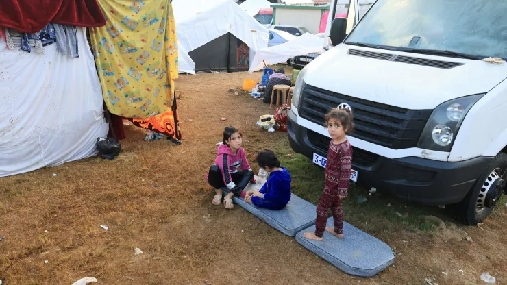

White House says Israel will implement 4-hour pauses in fighting in areas of north Gaza every day
Israel has agreed to put in place four-hour daily humanitarian pauses in fighting, according to the White House, focusing on areas in northern Gaza. The pauses will start Thursday, with the U.S. saying it has secured a second pathway for civilians to flee. -CNBC

Blinken restates commitment to Palestinian state on West Bank visit
Antony Blinken, the US secretary of state, restated Washington’s commitment to the creation of a Palestinian state during a brief trip to the occupied West Bank on Wednesday, a visit dismissed by many residents as “theatre”. -The Guardian
South Africa’s ICJ case against Israel
The two-day public hearing in South Africa’s genocide case against Israel at the International Court of Justice (ICJ) begins on Thursday. The South African government brought the case against Israel on December 29, accusing it of “genocidal acts” in its assaults on Gaza. Palestinians and pro-Palestine campaigners around the world are hoping the ICJ might halt Israel’s devastating military campaign in Gaza, which has seen more than 23,000 people killed – nearly 10,000 of them children. -Al-Jazeera